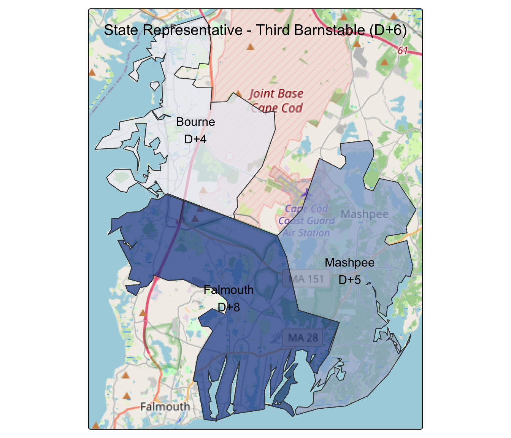
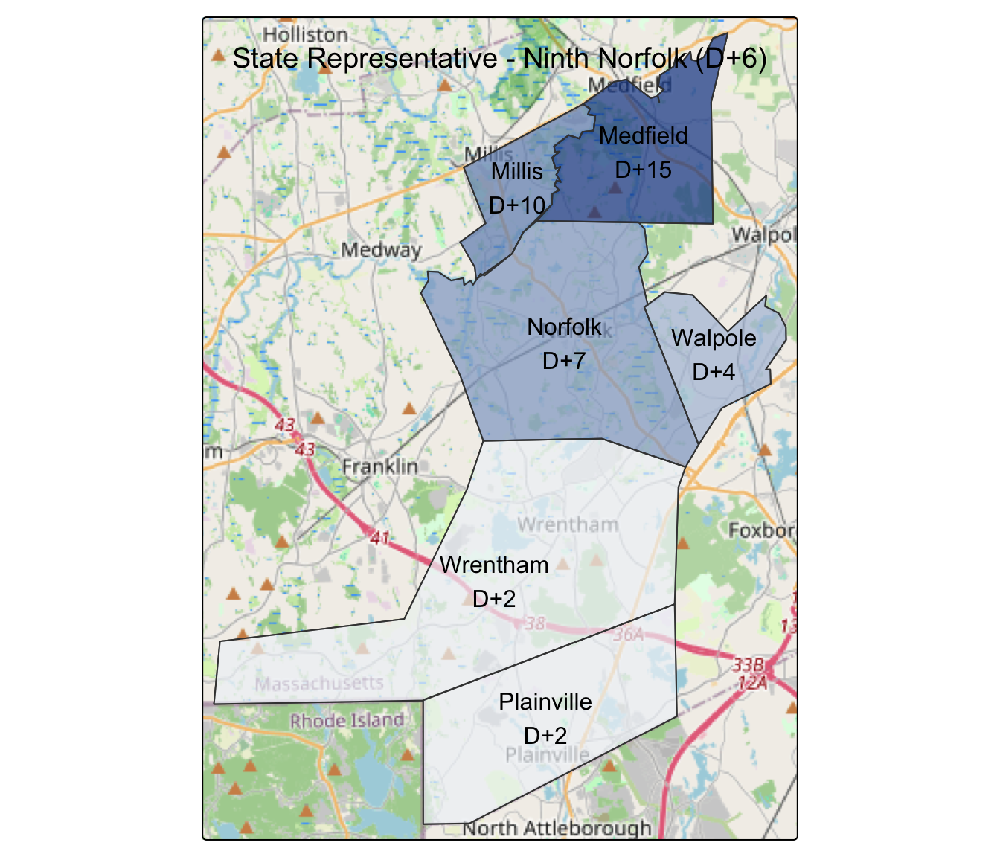
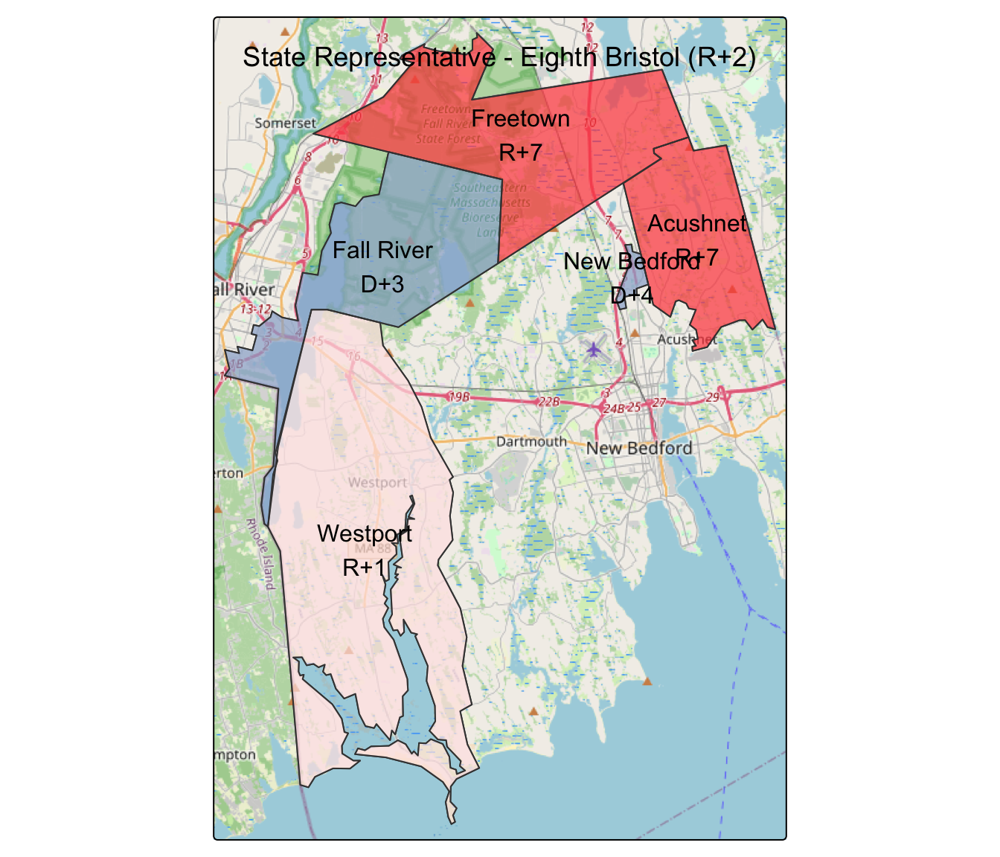

The top eight most competitive state legislative races
A mix of GOPs incumbents in swing districts and competitive open seats look to be the tightest races according to our fundamentals-based model
Several key factors that can be used to model Massachusetts state legislative outcomes are overall partisanship, which can be approximated using the Cook Political Report’s Partisan Voter Index (PVI), whether there is a Democratic incumbent, a Republican incumbent, or no incumbent, and whether the election coincides with a presidential election.
I applied this model to the State Senate and State Representative matchups that will be decided on November 5, 2024 and the following eight districts have an average simulated Democratic margin that is +/- 10 points from evenly split, making them reasonably competitive from the model’s point of view.
Five of the competitive state legislative elections feature Republican incumbents in districts that have PVIs between D+1 and D+6, which puts them in a more competitive position in presidential election years.
| State Representative - Third Barnstable PVI: D+6, Model: R+1 |
|
|---|---|
| David T. Vieira (R-Falmouth) | Incumbent |
| Kathleen Fox Alfano (D-Bourne) | |
| State Representative - Ninth Norfolk PVI: D+6, Model: R+2 |
|
| Marcus S. Vaughn (R-Wrentham) | Incumbent |
| Kevin C. Kalkut (D-Norfolk) | |
| State Representative - First Worcester PVI: D+2, Model: R+7 |
|
| Kimberly N. Ferguson (R-Holden) | Incumbent |
| Anthony L. Ferrante (U-Holden) | |
| State Representative - Twenty-Second Middlesex PVI: D+1, Model: R+9 |
|
| Marc T. Lombardo (R-Billerica) | Incumbent |
| George John Simolaris, Jr. (U-Billerica) | |
| State Representative - Fifth Barnstable PVI: D+1, Model: R+10 |
|
| Steven G. Xiarhos (R-Barnstable) | Incumbent |
| Owen G. Fletcher (D-Barnstable) | |
The Ninth Norfolk district features a rematch between now-incumbent Marcus Vaughn (D-Wrentham) and Kevin Kalkut (D-Norfolk) who faced each other in 2022 when Shawn Dooley (R-Norfolk) ran against Becca Rausch (D-Needham) for the Norfolk, Middlesex and Worcester State Senate Seat. The model gives Vaughn extra points as an incumbent, but the presidential year advantage for Democrats keeps the model’s average simulated outcome to an R+2 margin.

The next set of competitive races are open seats which lean slightly Republican with PVIs R+1 or R+2.
| State Representative - Eighth Bristol PVI: R+2, Model: D+5 |
|
|---|---|
| Steven J. Ouellette (D-Westport) | |
| Christopher Thrasher (R-Westport) | |
| Jesse W. St. Gelais (U-Acushnet) | |
| Laura A. Hadley (U-Westport) | |
| Manuel Soares, Jr. (U-Westport) | |
| State Representative - Eighth Plymouth PVI: R+1, Model: D+5 |
|
| Dennis C. Gallagher (D-Bridgewater) | |
| Sandra M. Wright (R-Bridgewater) | |
| State Senate - Third Bristol and Plymouth PVI: R+1, Model: D+7 |
|
| Joseph Richard Pacheco (D-Raynham) | |
| Kelly A. Dooner (R-Taunton) | |
| James B. Dupont (U-Raynham) | |
The majority of the model training comes from head-to-head Democratic/Republican matchups, so we should treat the four districts that are not D/R head-to-heads as being even more unpredictable than the +/- 20 or so points that the model has for its 95% confidence interval.
- The First Worcester and Twenty-Second Middlesex State Representative matchups both have a Republican incumbent facing an Unenrolled candidate, rather than a Democrat.
- The Eighth Bristol State Representative race has Democrat Steven Ouellette, Republican Christopher Thrasher, and three Unenrolled candidates in the five candidate mix.
- The only State Senate race on our list, the Third Bristol and Plymouth, features Democrat Joseph Pacheco (no relation to the retiring Senator Marc Pacheco), Republican Kelly Dooner, and independent James Dupont.
